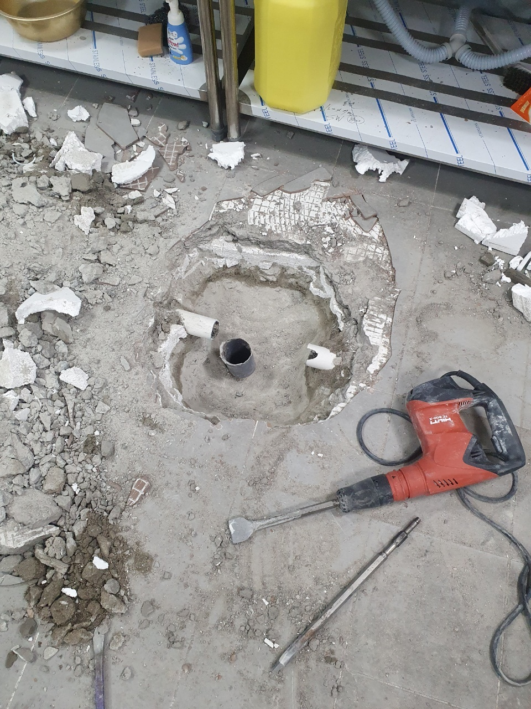
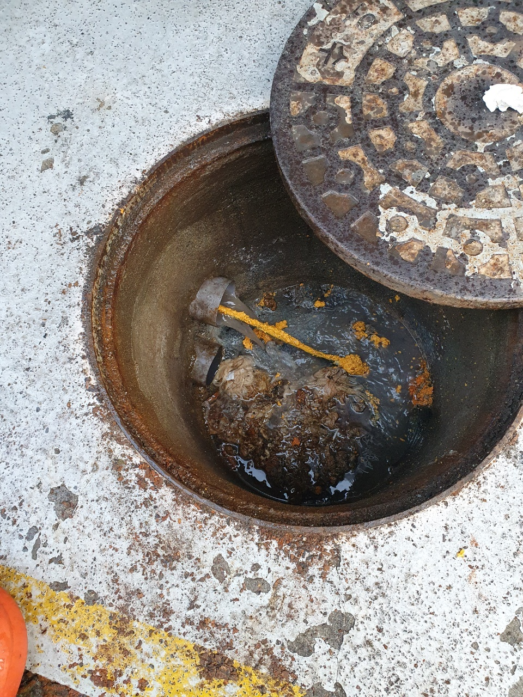
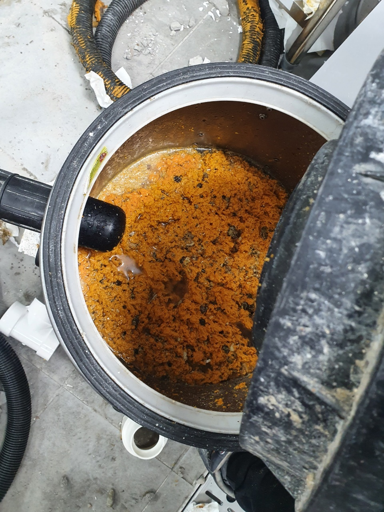
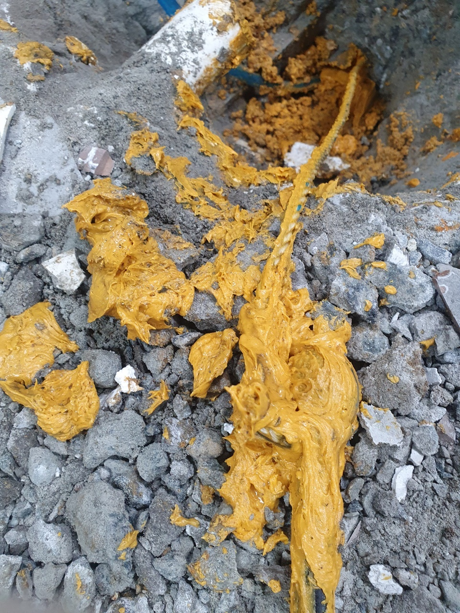

🏠 장안구하수구막힘 율전동 율천동 하수구역류해결 완벽한 마무리!
수원 하수구막힘 전문 시공 후기

📋 작업 개요
- 위치: 수원
- 서비스 유형: 하수구막힘, 배관막힘, 역류해결, 고압세척
- 작업 일시: 2022. 10. 13. 20:25
- 업체명: 하수구수사대 (010-5615-2118)
🔍 문제 상황
안녕하세요. 하수구수사대입니다.
이번에 방문한 현장은 장안구하수구막힘 율전동 율천동 하수구역류해결을
위해서 방문한 현장으로 상가 현장으로 되어 있었습니다.
1층에는 매장이 입점되어 있고 나머지 층수에는 가정집으로 되어있는 형태의 건물이었습니다. 보통 이런 건물의 형태에서는 공용 시설들이 있다 보니 배수구가 막히는 일이 쉽게 발생할 수 있습니다.

🔎 원인 분석
💡 전문가 진단: 이번에 방문한 현장은 장안구하수구막힘 율전동 율천동 하수구역류해결을 위해서 방문한 현장으로 상가 현장으로 되어 있었습니다.
각각의 세대에서 배수구를 통해서 배출되는 이물질들과 함께 1층 상가를 통해서 배출되는 음식물 찌꺼기와 기름때 등으로 인해서 배관이 막히게 될 수 있는 것입니다. 그러므로 이러한 문제를 발견하게 된다면 바로 전문 업체를 통해서 원인 점검을 하고 해결을 하는 것이 필요합니다.
급하게 셀프로 해결을 하려고 하시는 분들도 있을 수 있을 텐데요.
근본적으로는 하수구 막힘의 원인이 무엇인지를 제대로 알지 못하고 해결을 하려고 하면 또다시 막히게 될 수 있기 때문입니다. 그러므로 전문 업체를 통해서 내시경과 고압세척기 등의 다양한 최신 장비를 이용해서 전체적인 문제점을 확인하면서 깔끔하게 해결을 하는 것이 좋은 것입니다.
장안구하수구막힘 율전동 율천동 하수구역류해결 현장에 도착해서 건물 내부로 들어가서 피해가 발생하고 있는 곳을 먼저 확인해 보는 작업을 시작하였습니다. 이미 1층 세대 같은 경우에는 역류로 인해서 화장실의 내부가 엉망이 된 상황이었는데요. 2, 3층에 거주를 하는 세대에서도 지속적으로 물이 내려가지 않고 역류하는 상황이 계속 발생하고 있었다고 합니다.
문의전화 010-4437-9128

🔧 작업 과정
이러한 현상은 보통 공용 배관이 막히게 되었을 때 발생할 수 있는 현상입니다.
이렇게 공용으로 사용하는 메인 배관이 막히게 되는 이유는 한 세대만의 문제라기보다는 오랜 시간 동안 배수관에 축적되어 있던 이물질들이 서로 뭉치고 얽히게 되면서 막히게 된 것이라고 생각하실 수 있습니다.
배관 내시경을 통해서 내부에 어느 부분이 막히게 되었는지를 파악하고 난 후에 고압세척을 통해서 배관 내부의 이물질들을 제거하기로 하였습니다. 많은 분들이 고압세척 같은 경우는 규모가 큰 건물에서만 사용을 하는 것이라고 생각하실 수 있습니다.
하지만 일반 가정집 같은 경우에도 이런 문제가 충분히 발생할 수 있는데요.
점검이나 세척을 한지 오래된 배관의 경우에는 더욱 이러한 막힘이 발생할 확률이 높다고 할 수 있습니다. 그러므로 건물의 형태에 관계없이 정기적으로 관리를 하는 것이 중요한데요 전문 업체를 통해서 정기점검을 받아보시는 것이 가장 좋은 방법이라고 할 수 있습니다.
모든 하수구들이 다른 것처럼 보일 수 있지만 결국은 하나의 배관으로 연결이 되어 있기 때문에 메인관이 한번 막히게 되면 여러 곳에서 동시에 피해가 발생할 수도 있는 것입니다. 장안구하수구막힘 율전동 율천동 하수구역류해결을 위해서는 우선 메인배관을 세척하는 것이 우선이었는데요.
내부에서 막힘이 발생하는 구간을 확인을 한 후에 그 지점을 중심으로 고압세척 작업을 진행하기로 하였습니다.
배수구 입구로 배관 내시경 카메라를 통해서 모니터에 보이는 상태를 확인하고 전체적으로 필요한 절차를 확인하는 작업을 하게 됩니다. 배관의 내부는 워낙에 구불구불하면서 길게 연결이 되어 있는 구조이기 때문에 외관상으로는 어떠한 문제점을 확인하기 어려울 수 있습니다.


✅ 작업 완료
고압세척을 통해서 내부에 이물질들이 모두 깨끗하게 배출이 되는 것을 확인을 하면서 작업을 하였는데요. 고압세척은 강한 수압으로 이물질을 배출하는 것이기 때문에 배관 내부에 손상을 주지 않고 문제를 해결할 수 있는 장비라고 할 수 있습니다. 저희는 현장을 깨끗하게 마무리한 후 작업을 모두 마쳤습니다.
경기도 수원시 장안구 서부로 2139 5층 5032호




⚠️ 하수구 배관 막힘 예방 및 관리 가이드
- ✅ 머리카락, 비닐, 물티슈 등 물에 분해되지 않는 이물질은 하수구 유입을 절대 금지해 주세요.
- ✅ 하수구 거름망을 씌우고 모여진 이물질은 주기적으로 쓰레기통에 바로 비워주셔야 합니다.
- ✅ 배관 노후가 심할 경우 이물질이 더 쉽게 걸리므로 주기적인 배관 세척(고압세척 등)을 권장합니다.
- ✅ 작업 후 1년 이내 재발 시 하수구수사대에서 무상 A/S 보증 서비스를 제공합니다.
💡 핵심 정리
- 확실한 장비 작업(내시경 점검 및 샤프트 스케일링)으로 원인을 뿌리 뽑습니다.
- 작업 후 1년 이내에 동일한 부위 재발 시 100% 무상 A/S 서비스를 보장합니다.
- 서울 · 경기 · 인천 전 지역에 24시간 언제든 긴급 출동할 수 있도록 항시 대기 중입니다.
❓ 자주 묻는 질문 (FAQ)
🚨 수원 하수구막힘 문제로 고민이신가요?
정확한 원인 진단과 확실한 시공으로 재발 없는 해결을 약속드립니다.
24시간 긴급 출동 | 서울 · 경기 · 인천 전지역 | 1년 내 재발 시 무상 A/S